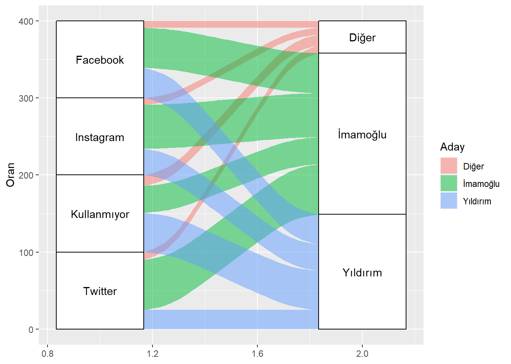
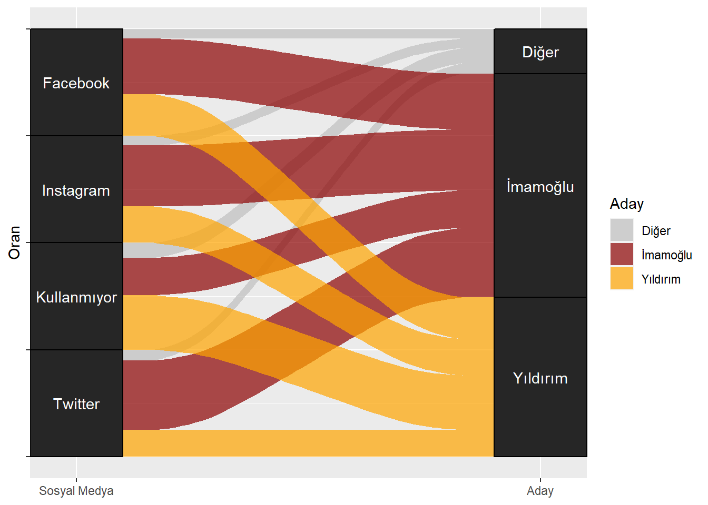
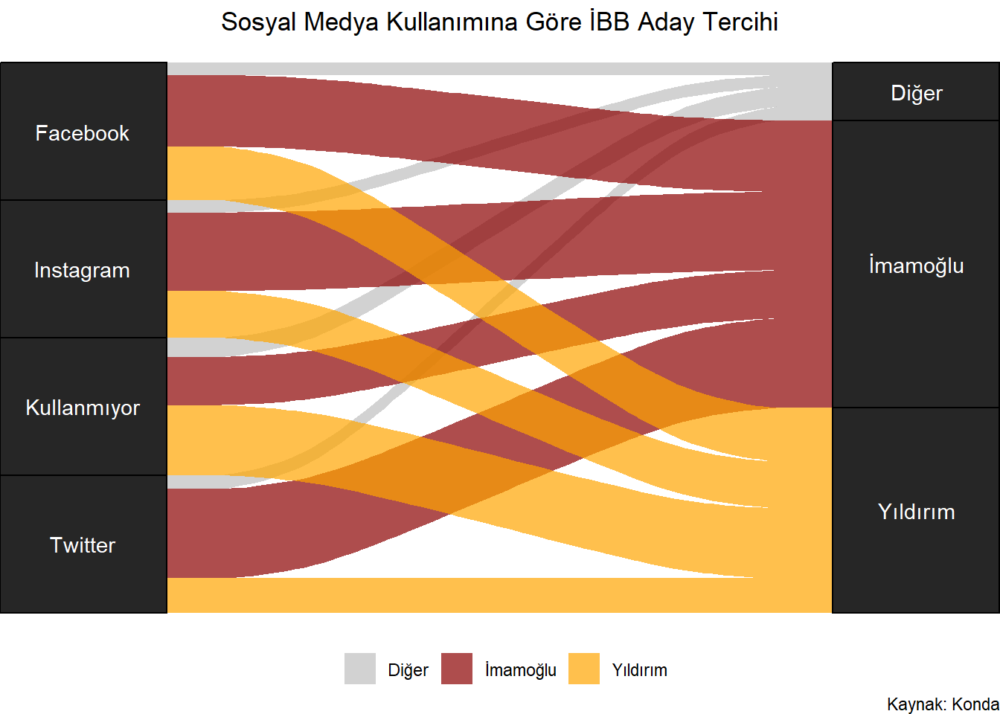

Bölüm 4 Tablolar
library(readxl);library(ggplot2);library(dplyr);library(magrittr);library(lubridate)
setwd("C:/Users/datanerd/Desktop/Github/rViz/data")
g3_1 <- read_excel("g3_1.xls")4.1 Heatmap (Isı Haritası)
Tüketici güven endeksi verileri:
g3_1 %<>%
mutate("Yıl" = year(Tarih), "Ay" = month(Tarih, label = TRUE))
#En basit şekilde
ggplot(data = g3_1) +
geom_tile(mapping = aes(x = `Yıl`, y = Ay, fill = Endeks))
- Renkleri değiştirebiliriz.
ggplot(data = g3_1) +
geom_tile(mapping = aes(x = `Yıl`, y = Ay, fill = Endeks)) +
scale_fill_viridis_c()
y eksenini ters çevirebiliriz.
Grafikteki boşlukları kapatabiliriz.
ggplot(data = g3_1) +
geom_tile(mapping = aes(x = `Yıl`, y = Ay, fill = Endeks)) +
scale_fill_viridis_c() +
scale_y_discrete(limits = rev(levels(g3_1$Ay))) +
scale_x_continuous(expand = c(0,0))
Lejantı düzenleyebiliriz.
x ve y eksenlerine ait başlıkları kaldırabiliriz.
Başlık, alt başlık ve kaynak ekleyebiliriz.
Temayı değiştirebiliriz.
ggplot(data = g3_1) +
geom_tile(mapping = aes(x = `Yıl`, y = Ay, fill = Endeks)) +
scale_fill_viridis_c() +
theme(legend.position = "bottom",
legend.key.width = unit(3, "cm"),
legend.title = element_blank(),
panel.background = element_rect(fill = "white", colour = "gray")) +
scale_y_discrete(limits = rev(levels(g3_1$Ay))) +
scale_x_continuous(expand = c(0,0)) +
labs(x = NULL,
y = NULL,
title = "Tüketici Güven Endeksi",
subtitle = "Ocak/2004-Nisan/2020 tarihlerine ait verilerdir",
caption = "Kaynak: TÜİK")